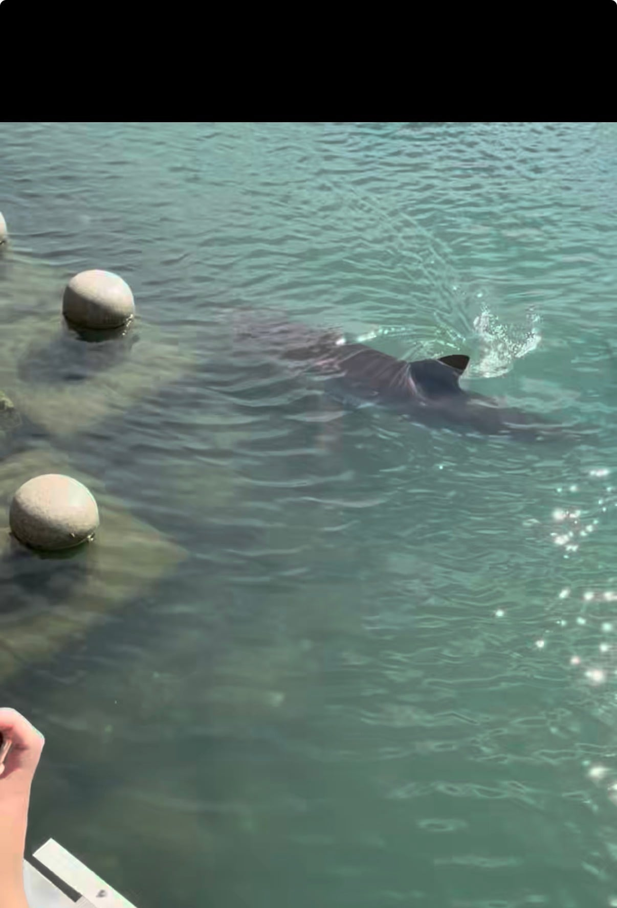

사이즈 줄어보임

사이즈 줄어보임
ㄴㄴ쟤 내가찍었는데 2미터 정도밖에 안되보였음
심지어 좀 몸통도 얇았음
들어보니 새끼는 일미터라던데
렌즈 왜곡일수도?
망원으로 위에서 당겨찍은거랑 눈높이에서 바다안에 있는걸 찍는거랑 사이즈가 달라보일수도 있으까
700억으로 상어 한마리씩 계속 푸는게 싸게 먹혔겠는데? ㅋㅋㅋㅋ
사진으로 보기에는 배는 큰거 같은데 잘먹나바
이러다 눌러앉는거 아냐?ㅋㅋㅋㅋㅋ
"그곳"
애 낳고 다이어트 하시나보1지
실제로보면 꽤 큼
마운자로 맞은듯
새끼도 있다메 새끼아니야?